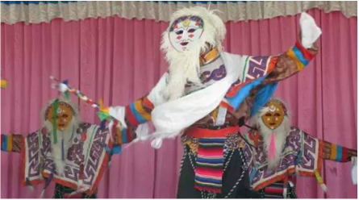
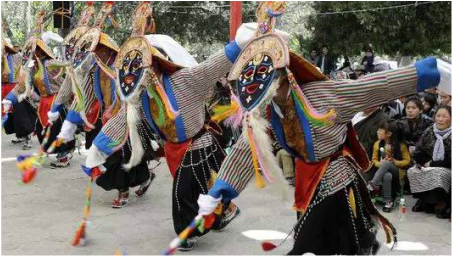

Dance
西藏戲劇簡稱藏戲，由於各地歷史、地理等的差別，形成各自獨有的特點和風格， 因而形成藏戲不同的流派。在這些流派中，有屬於舊派的白面具派，有屬於藍面具的新派， 也有獨角戲。 藍面具藏戲，是藏族中心地區衛藏方言劇種，是傳統最豐厚、藝術最發達 、影響最大的藏族劇種，藏語稱為“拔溫布”，即藍面具戲。 藍面具派又稱“新派”，其表演藝術有較大發展，影響也比較大， 慢慢就把舊派代替了。新派形成了以四個藍面具戲班為中心的四大藝術流派， 即迥巴、江嘎爾、覺木隆、香巴四大劇團。

白面具藏戲
白面具藏戲，系藏族戲曲母體劇種，歷史最為悠久，流傳十分廣泛， 藏語稱為“拉姆拔嘎布”，是仙女白面具戲的意思。 屬白面具的舊派，有古老質樸的賓頓巴、由白麵具演變為黃面具的扎西雪巴和 向藍面具藏戲過渡的尼木巴三個藝術流派。
